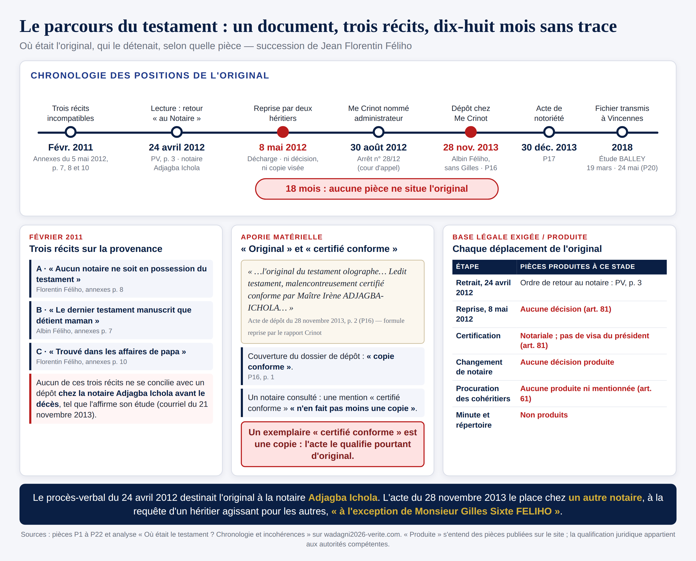

1. Les faits
| Date | Fait |
|---|---|
| 16 juillet 2009 | Un avocat rédige un testament olographe de dix feuilles (acte de dépôt, P16). |
| 3 décembre 2010 | Il décède à Cotonou. L'extrait d'acte de décès est établi le 6 décembre 2010 (P1, P18). |
| Février 2011 | Entre cohéritiers, trois versions circulent sur l'origine du testament : aucun notaire ne le détiendrait ; la mère le détiendrait ; il aurait été trouvé dans les affaires du défunt (annexes de la lettre du 5 mai 2012). |
| 24 avril 2012 | Le tribunal de Cotonou lit le testament, le paraphe et ordonne son retour « au Notaire pour être déposé au rang de ses minutes », celui du notaire Irène ADJAGBA ICHOLA (procès-verbal de lecture, P2). |
| 25 avril et 8 mai 2012 | Selon l'étude du notaire Irène ADJAGBA ICHOLA, l'original lui est retourné le 25 avril, puis repris le 8 mai par deux héritiers, décharges manuscrites à l'appui (P3). |
| 30 août 2012 | La cour d'appel de Cotonou nomme le notaire Lazare CRINOT administrateur provisoire de la succession, à la demande de l'héritier Gilles Féliho (P21, P4). |
| 28 novembre 2013 | Un héritier, Albin Féliho, agit « au nom et pour le compte de ses cohéritiers, à l'exception de » l'héritier Gilles Féliho. Il fait mettre au rang des minutes du notaire Lazare CRINOT « l'original du testament », « malencontreusement certifié conforme » par le notaire Irène ADJAGBA ICHOLA. La couverture du dossier porte « copie conforme » (P16). Le 30 décembre 2013, le même notaire reçoit un acte de notoriété qui énumère les cinq enfants du défunt comme héritiers (P17, P18). |
| 10 août et 20 octobre 2016 | Une déclaration de succession est enregistrée au répertoire de l'Étude du notaire Félix BALLEY ; le certificat d'acquit de droit du 20 octobre 2016 porte la date de décès « dix juin deux mil seize » et mentionne que le notaire Félix BALLEY agit « en qualité de mandataire et au nom des héritiers », dont l'héritier Gilles Féliho (P6, P7). |
| 19 mars - 24 mai 2018 | Un office notarial de Vincennes demande des informations à l'Étude du notaire Félix BALLEY, qui accuse réception, puis est relancé en avril. Le 24 mai, l'office notarial de Vincennes transmet à l'héritier Gilles Féliho un fichier de trente pages : certificat, acte de dépôt, acte de notoriété (P20, P8). |
| 7 septembre 2023 | Saisi de demandes de communication d'actes, le notaire Félix BALLEY répond que les demandes portent sur des actes « auxquels il n'est pas partie » et invoque la confidentialité et l'absence d'ordonnance (P9). |
2. Les questions
Chaque question est assortie des textes applicables et d'une piste de réponse. La piste de réponse indique la règle et les éléments à examiner ; elle ne conclut pas à la place de l'étudiant.
Piste de réponse
L'article 81 interdit au notaire de se dessaisir d'une minute « sauf dans les cas prévus par la loi ou en vertu d'un jugement » ; avant de s'en dessaisir, il dresse une copie dont la conformité est mentionnée par le président du tribunal de première instance, substituée à la minute. L'article 75 attache la nullité aux actes faits en contravention à l'article 81, s'ils ne sont pas revêtus de la signature de toutes les parties. À examiner : l'original du testament était-il une minute de l'étude du notaire Irène ADJAGBA ICHOLA ? Une décision autorise-t-elle la reprise du 8 mai 2012 ? Une copie visée par le président du tribunal existe-t-elle ? Le procès-verbal du 24 avril 2012 vaut-il autorisation de dessaisissement, ou ordre de retour ?
Piste de réponse
Une copie, même certifiée conforme, reste une copie. Dans le régime de l'article 81, la mention de conformité relève du président du tribunal, non du notaire. L'étudiant relèvera la formule de l'acte (« l'original… malencontreusement certifié conforme ») et la mention « copie conforme » de la couverture, puis envisagera les hypothèses : un original portant par erreur une mention, ou une copie qualifiée à tort d'original. Quelles preuves permettraient de trancher (examen de l'exemplaire annexé, minute, répertoire) ?
Piste de réponse
L'article 61 impose d'annexer les procurations à l'acte ou de les déposer au rang des minutes, avec mention dans l'acte. L'acte de notoriété établit la qualité et la vocation héréditaires des personnes qui se présentent comme héritiers ; il n'établit pas le pouvoir de représenter l'un d'eux. L'étudiant examinera : une procuration est-elle produite ? Que dit l'acte du 28 novembre 2013 sur la représentation de l'héritier Gilles Féliho ? La mention du certificat de 2016 peut-elle s'appuyer sur un document antérieur ?
Piste de réponse
L'article 82 ne requiert l'ordonnance du président du tribunal que pour les personnes autres que les intéressés en nom direct, les héritiers ou les ayants droit. L'étudiant vérifiera la qualité de l'héritier Gilles Féliho (acte de notoriété, P17), puis la cohérence entre le refus (« tiers non partie ») et la mention du certificat qui le dit représenté.
Piste de réponse
L'acte constate des déclarations de témoins sur la qualité d'héritier, la date de décès et la dévolution. Il fixe le décès au 3 décembre 2010 ; il mentionne un titre foncier 729 pour le lot 240, là où le certificat porte 739. L'étudiant distinguera ce que l'acte établit (qualité d'héritier, composition de la succession selon les déclarants) de ce qu'il n'établit pas (représentation, évaluation des biens).
Piste de réponse
Six pièces fixent le décès au 3 décembre 2010 ; le certificat porte le 10 juin 2016. Avec la première date, le délai de six mois expire le 3 juin 2011 et la déclaration enregistrée le 10 août 2016 est en retard de cinq ans et deux mois ; avec la seconde, la déclaration paraît faite dans le délai. L'étudiant déterminera qui a pu fournir la date, quelles pièces étaient disponibles au moment de l'inscription, et si l'écart relève d'une erreur matérielle ou d'une autre cause, en s'en tenant aux pièces.
Piste de réponse
L'article 47 du statut prévoit la responsabilité disciplinaire et pénale du notaire pour les fautes commises dans son ministère. L'étudiant articulera : la voie disciplinaire, la voie civile (faute, préjudice, lien de causalité), la voie pénale (faux, qui suppose une altération de la vérité, un écrit protégé, un préjudice et l'élément intentionnel) et les conséquences fiscales éventuelles pour les héritiers. Il appréciera quels éléments de preuve sont nécessaires pour chacune, et lesquels manquent à ce stade.
3. Pièges pédagogiques (sous forme de questions)
- Un acte certifié conforme vaut-il original ? Que signifie exactement la mention « certifié conforme », et qui peut l'apposer ?
- Un acte de notoriété vaut-il mandat ? Que prouve-t-il, et que ne prouve-t-il pas ?
- L'absence d'une pièce prouve-t-elle son inexistence ? Quelle différence entre « non produite à ce stade » et « inexistante » ?
- Une décision qui destine un dépôt à un notaire permet-elle un autre dépôt ? Quelle autorité peut modifier la destination fixée ?
4. Grille de correction (20 points)
| Compétence | Points | Critère |
|---|---|---|
| Connaissance des textes | 8 | Identification des articles applicables et de leur portée (statut du notariat, CPF, CGI) ; exactitude des citations. |
| Application aux pièces | 8 | Rapprochement précis des textes et des pièces (P1 à P22), distinction entre ce que les pièces établissent et ce qu'elles n'établissent pas. |
| Esprit critique et objection | 4 | Hypothèses alternatives, objections raisonnables, identification des pièces manquantes. |
5. Pour aller plus loin
- Les 22 pièces du bordereau, téléchargeables : wadagni2026-verite.com/#bordereau
- Analyse « Où était le testament ? Chronologie et incohérences » : analyse-localisation-testament-par-date.html
- Volet institutionnel : la plainte déontologique du 2 avril 2023
- Vidéo « La Mécanique de Verrouillage » (19 min 06) : wadagni2026-verite.com/#video-mecanique
Textes de référence
- Statut du notariat, loi n° 2002-015 du 30 décembre 2002 : art. 1, 33, 37, 47, 51 à 57, 61, 75, 76, 77, 81, 82
- Code des personnes et de la famille, loi n° 2002-07 : art. 13, 813, 881
- Code général des impôts : art. 438 (délai de déclaration des successions)
- Cour suprême du Bénin, 29 novembre 2019, arrêt n° 49/CJ-CM : obligation d'information du notaire